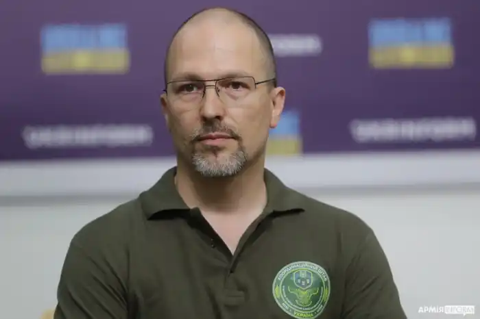

Петро Яценко народився 11 серпня 1978року у Львові. Вищу освіту отримав у Національному університеті "Львівська політехніка".
Яценко є лауреатом всеукраїнських літературних конкурсів "Нові автори" (Харків, "Клуб сімейного дозвілля", за роман "Йогуртовий бог"), "Смолоскип" (за повість "Мар'яна, чи Дерево бодхі"). Стипендіат програм Gaude Polonia (куратор — Ольга Токарчук), Bank Austria Literaris (2012).
У 2016 р. Чернігівський Молодіжний театр за романом Петра Яценка "Повернення придурків" поставив однойменну виставу. У грудні 2018 р. отримав у Львові Премію міста літератури ЮНЕСКО за роман "Нечуй. Немов. Небач". У жовтні 2021 року роман "Магнетизм" потрапив до фіналу Центральноєвропейської літературної премії "Ангелус". У грудні 2021 року дитяча повість Яценка "Союз радянських речей" була відзначена як найкраща книжка року в номінації "Художньо-пізнавальна проза для підлітків". У 2021 році книга "Союз радянських речей" також стала переможцем Книга року BBC у номінації "Дитяча Книга року BBC". Твори Яценка перекладені німецькою та польською.